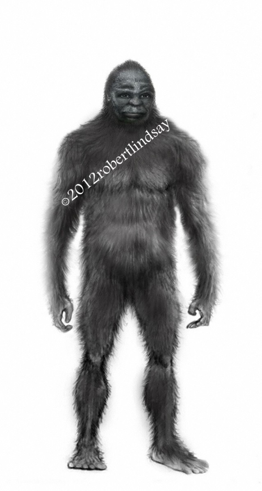

-

 Bigfoot
Bigfoot
American folklore: Bigfoot or Sasquatch is a large, feral apelike creature.
Click here or on the thumbnail image to learn more -
 Loch Ness Monster
Loch Ness Monster
Legendary huge Scottish serpentine water creature. Many purported sightings.
Click here or on the thumbnail image to learn more -
Sea Serpent
A giant serpent that swims in the ocean. Many cultures reference it.
Click here or on the thumbnail image to learn more -
 Hippogriff
Hippogriff
Greek and Roman myth. Front half eagle, back half horse. Well known to Harry Potter fans.
Click here or on the thumbnail image to learn more -
 Simurgh
Simurgh
Persian myth. A giant and helpful bird. Usually a peacock with a dog's head and lion's claws.
Click here or on the thumbnail image to learn more -
 Garuda
Garuda
Hindu and Buddhist myth in India, Nepal, Indonesia, Japan, other Asian countries. A large bird or a big creature with a bird's head and a human body.
Click here or on the thumbnail image to learn more -
Behemoth
A large Biblical beast. Sometimes depicted as an elephant or hippopotamus or dinosuar.
Click here or on the thumbnail image to learn more -
Roc
Giant bird from Arabic myths.
Click here or on the thumbnail image to learn more